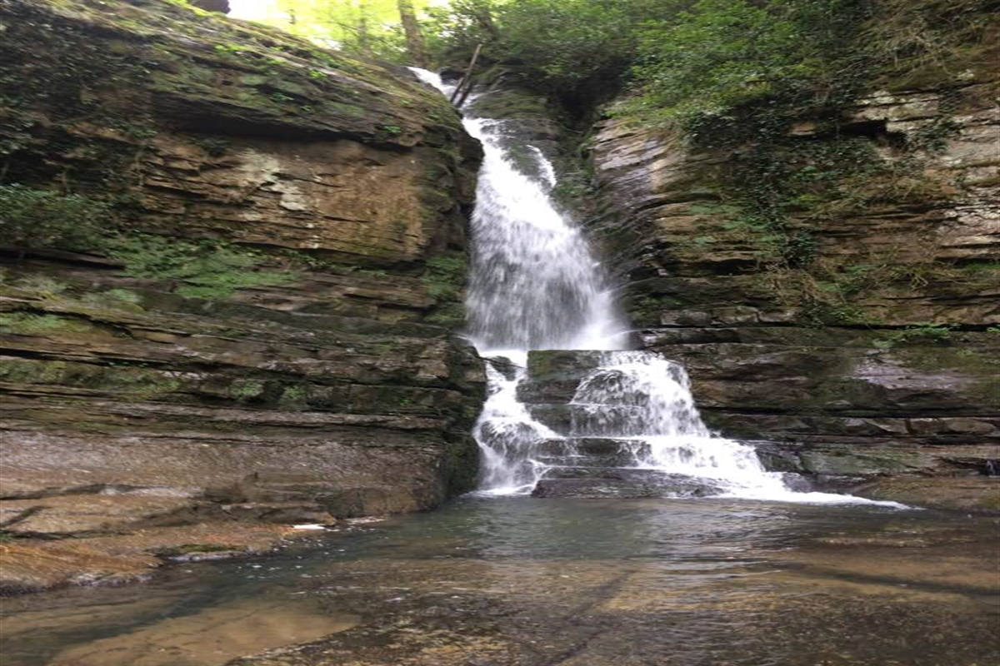

HARMANKAYA ŞELALESİ
Şelaleler bölgesine nehir yatağından 3 km’lik yürüyüşle ulaşılıyor… Karagöl Dere üzerinde bulunan Harmankaya Şelalesi, 250-280 metre rakımları arasında olup Karagöl Dere’nin kiltaşı tabakalarını aşındırması sonucu meydana gelmiş. Doğanın içinde yaklaşık 6 saat süren bir yürüyüşle geçilebilen parkur, zaman zaman iple iniş yapmayı, tırmanmayı da gerektirmektedir.
Harmankaya Şelalesi Zonguldak il merkezine çok yakın. 3 şelaleden oluşuyor. İkinci şelale en yüksek ve güzel olan. Şelalenin altından şelaleyi fotoğraflamak kolay. Ağaçlık bir vadide, kuzeybatıya bakan geniş bir açıklık alan var.
Şelalelerin yer aldığı vadi içine orman içindeki patika yoldan iniş yapılır. Vadinin çoğu yerinde 10 metre genişliğinde düz alanlar vardır. Vadi içinde, ortalama 1100 metrelik bir yürüyüş sonrası birinci şelale karşınıza çıkar. Birinci şelalenin hemen yanından yokuş yukarı 10 metresi % 80 eğimli, 15 metresi % 60 eğimli tırmanış ve yine çalılar arasındaki patikada 20 metre ilerledikten sonra 1’inci şelalenin akış tepesindeki vadiye inilir. Buradan 250 metre ilerleme yapıldıktan sonra 2’nci şelale karşınıza çıkar. Burada da hemen şelale yanından yukarıya orman içine % 70 eğimli 30 metre bir tırmanış ve tırmanıştan sonra 20 metrelik patika yoldan yüründüğünde 2’nci şelalenin üzerine çıkılır. Burada vadi içinde 200 metre daha ilerledikten sonra karşınıza 3’üncü şelale çıkar.
Parkur boyunca yemyeşil bir bitki örtüsü eşliğinde yürüyüş yapma imkanı var. Vadi içindeki ormanlık alanda kestane, meşe, gürgen, ıhlamur, şimşir, kızılcık, kızılağaç, kavak, çınar, karayemiş, kocayemiş, yabani elma, yabani kiraz, yabani fındık, defne, muşmula, yılkın çalısı, geyik üzümü, yabani üzüm, ovaz, ahlat, orman gülü, böğürtlen, kuşburnu gibi bitki türlerine rastlamak mümkündür. Ayrıca zılbıt, çiçekli ve çiçeksiz sarmaşık türleri, ısırgan, katırtırnağı, ballıbaba, papatya türleri, siklamen, mor menekşe, çuha çiçeği, böcek kapan, çaydanlık çiçeği, yabani çilek, yosun gibi endemikler de bulunmaktadır. Haftaya yolculuğumuz Ereğli'de Güneşli Kayalıdere Şelalesi’ne…